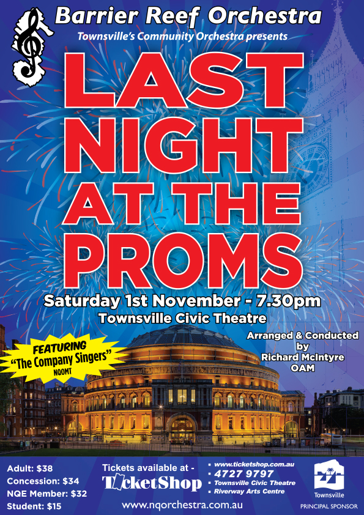

| Conductor: | Richard McIntyre |
|---|---|
| Program: | |
| Ralph Vaughan Williams: | |
| Overture to The Wasps | |
| English Folk Song Suite | |
| March: Seventeen come Sunday | |
| Intermezzo: My Bony Boy | |
| March: Folk Songs from Somerset | |
| Cantata: In Windsor Forest (from Sir John In Love) | |
| The Conspiracy | |
| Drinking Song | |
| Falstaff and the Fairies | |
| Wedding Chorus | |
| Epilogue | |
| George Frideric Handel: | |
| Excerpts: The Messiah | |
| Overture | |
| Recitative: Comfort ye my people; | |
| Air: Ev’ry valley shall be exalted | |
| Chorus: And the glory of the lord | |
| Recitative: Then shall the eyes of the blind be opened | |
| Air: He shall feed his flock like a shepherd | |
| Chorus: All we like sheep have gone astray | |
| Chorus: Hellelujah! | |
| Ralph Vaughn Williams: | March Past of the Kitchen Utensils from The Wasps |
| Sir Edward Elgar: | Pomp and Circumstance March No. 1 |
| Charles H. H. Parry: | Jerusalem |
| Thomas Arne (arr. Sir Malcolm Sargent): | Rule Britannia |
| Michael Hurst: | The Swagman’s Promenade Orchestra Members |
| Rehearsal Conductors: | Ben Fixter, Andrew Ryder |
|---|---|
| Concert Master: | Stephen Frewen-Lord |
| Violin 1: | Stephen Frewen-Lord, Tracey Cook, Carla Littlefield, Jasmine Martin, Jasmine Lee, Alison Brown |
| Violin II: | Alexandra Gorton, Bianca Bachiella, Bianca Parison, Julia Ramsbotham, Florence Cappler-Schillington |
| Viola: | Daniella Bijl, Aidan Fitzgerald, Cortney Husodo, Emily Mathews, Bethany Waller |
| Cello: | Caroline Arlett, Margaret Loftus, Carole Radovanovic, Arabella Cambell, Rebecca Marki, Zali Clark |
| Double Bass: | Phil Honey, Olivia Adcock, Stephen Kluver, Maureen Wallace, Emma Wooton |
| Flute: | Sally Faint, Chisako Kameo |
| Piccolo: | James Hultgren |
| Oboe: | Bernie Girard (Brisbane), Georgina Kanowski |
| Clarinet: | Jacinta Payne, Yuri Wallace. |
| Bass Clarinet: | Craig Land |
| Bassoon: | Sarah Hill, Carl Bryant |
| Horn: | Andrew Ryder, Suzanne Darrigan, Ben Fryer |
| Trumpet: | Ben Fixter; Arthur Florence, Sea Wong-Jang |
| Trombone: | Dylan Troyahn, Sharon Casey, Mark Land |
| Tuba: | Andrew Hodgson |
| Harp: | Leah Li |
| Keyboard: | Craig Land, Ruby Ansic |
| Timpani: | Noel Price |
| Percussion: | Ruby Ansic, Nathan Tipping |
NQOMT’s The Company Singers
| Director: | Megan Walsh |
|---|---|
| Accompanist: | Trevor Riley |
| Proms Soloists: | Kate Andrew, Meghan Walsh, Peter Carmen, Caroline Lloyd-Doolan |
| Sopranos: | Polly Adams, Kate Andrew, Laura Coulton, Rumi Dunlap, Rachel Harris, Laura James, Caroline Lloyd-Doolan, Lucia Parigi, Jennifer Paton, Kate Saunders, Terri Triebel, Jane Wu Won |
| Altos: | Alice Bartholomew, Rita Bisley, Sue Lobley, Carmel Mildren, Danielle Pauline, Julia Saldana Lopez, Meghan Walsh |
| Tenors: | Ralph Cannon, Peter Carmen, Nell Ivett, Neil Smith, Tony Woodhouse |
| Basses: | Benn Cox, Seka Kiyingi, Bevan Lobley, Kevin Price, Trevor Riley |